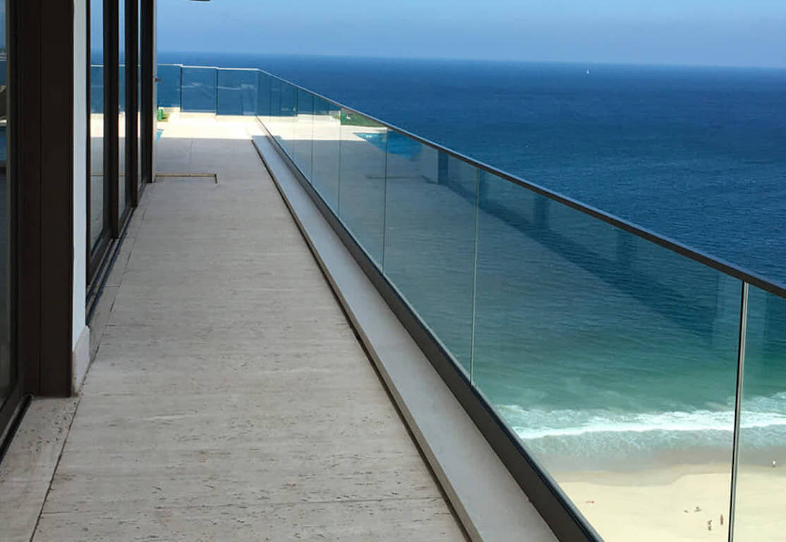
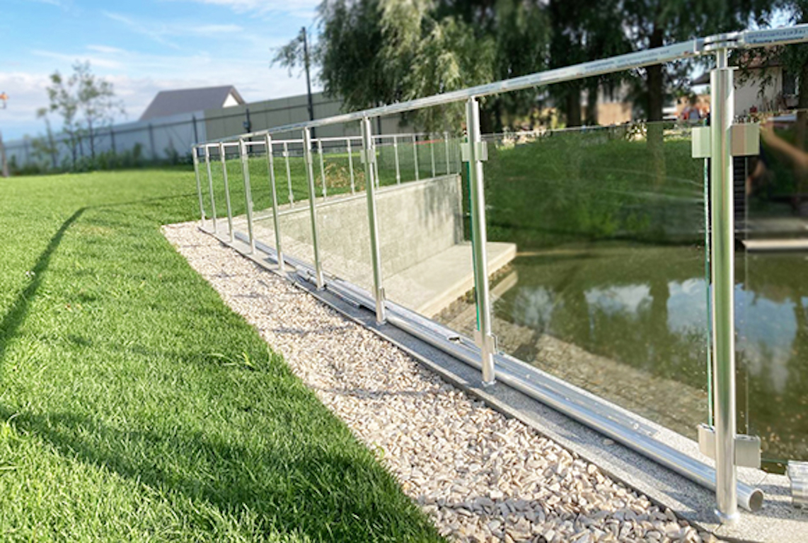
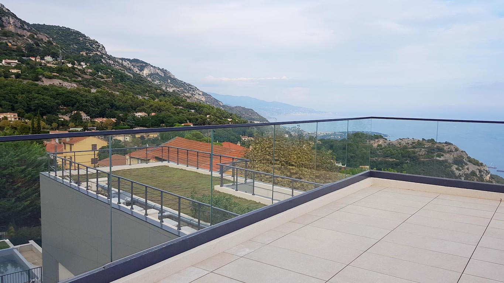

Алуминиеви парапети - решение
Алуминиевите парапети са изключително добро и ефективно решение както за интериор, така и за екстериор. Предимствата тук са многобройни, което ги прави и най-предпочитаните, а именно: ниска цена, висока устойчивост на атмосферни влияния, бърз и чист монтаж, възможност за индивидуално проектиране и визия, не корозират спрямо металните парапети, голямо разнообразие от профили, сглобки и цветове.
Използват се на стълбища, тераси, офис и жилищни сгради, рампи и в градината. Възможни са комбинации от кръгли и квадратни профили, с вертикален или хоризонтален пълнеж, със стъкло, тип френски парапет и други.
Покритието е с високоякостна елуксация стандартно в 3 нюанса – натурален, шампанско и тъмен инокс, но ALUREX предлага боядисване във всички цветове по каталог на системата RAL, както и гама от дървесни цветове.
Предимства на алуминиевите парапети
- Те са силно устойчиви на всякакви метеорологични условия, включително солен въздух
- Строителство по индивидуален проект
- Възможно боядисване по цветова система RAL
- Не корозират за разлика от металните парапети
- Не променят цвета си с течение на времето
- Устойчиви във водна среда за ограждане на детски басейни
- Кратко време за производство
- Алуминиевите парапети са с най-ниска цена
- Бърз и чист монтаж
- Възможност за подов и челен монтаж

